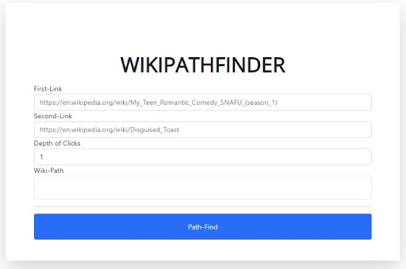

codecraft.io
August 2024Ignition Hacks 2024
AI-assisted coding learning platform built using React, Node.js Express, and Docker.

MappingX
October 20241st place at NASA Space Apps 2024
Mapping X is a web-based interactive Geographical Information System (GIS) tool that lets you generate .STL meshes from Digital Elevation Model (DEM) data and Surface Water and Ocean Topography (SWOT) data from open-source NASA Earthview data. Built using Python, React, and Linux.
GitHub repository. 5 min YouTube video. 30 second YouTube video.

Weekly Wardrobe
May 2024HawkHacks 2024
Weekly Wardrobe is a web application platform that allows users to subscribe to a "try on clothing temporarily" service. They will receive used clothing for them to try on, then they will rate the week's clothing. The algorithm will slowly adapt their style and preferences to the clothing they receive.

SuperCoolFlights
April 2024SOFE 3980U Final
Flight booking web application built using React, Tailwind CSS, Node.js Express, and Linux.

SuperCoolJobs
November 2023SOFE 3700U Final
Job recruitment web application built using React, Tailwind CSS, Node.js Express, Linux, Docker, and MySQL.

Climate Crusaders
October 20233rd Place at NASA Space Apps 2023
The goal of Climate Crusaders is to raise awareness about rising sea water levels using Global Mean Sea Level data from open-source NASA data, built using Python and PyGame.
GitHub - JeremyTubongbanua/nasa-space-apps-2023. Space Apps Challenge - Team Wesley. YouTube - Project Demo.

Split
March 2023Demo Fest 2023 Submission
Using atSigns and the at_java Java SDK, we implemented a Distributed Systems application that splits images into partitions and sends them to different servers securely. The images were processed and returned to the root, fully encrypted, and grey scaled.

MasterChef
February 2022UofT Hacks IX Submission
MasterChef is a web application that allows users to search for recipes based on the ingredients they have. Built using Flutter/Dart with a Firebase backend, this project was created as a sample submission for UofT Hacks IX.

CleanChoice
April 20232nd Place and Best UI/UX Award
CleanChoice was a project submitted to Schulich Hacks 2023, where my team and I were flown to the University of Calgary for a weekend to create a project to help the environment. Our project won 2nd place ($2k prize) and Best UI/UX ($1k prize). CleanChoice generates a QR code on your receipt and scans the environmental impact of the products you've purchased.

SuperCoolJobs
December 2022SOFE 2800U Final
This was our submission to the SOFE 2800U final project. SuperCoolJobs is a simple job recruitment website written in React with a MongoDB backend.

Bailey x Twitch
September 2022IoT plant that is watered by Twitch chat
This is an IoT plant connected to a Raspberry Pi Zero. A web server is run on the Raspberry Pi to serve as an API for the Twitch chatbot to interact with the plant. Twitch viewers can trigger the 5V DC water pump to water the plant by following, subscribing, or running a specific command.

WikiPathFinder
January 2022Hack The Job 2022 Submission
This was a project my friends and I made for Hack The Job 2022. We used DCP (Distributed Compute Protocol) by KDS (now called Distributive) to web scrape Wikipedia links and find the shortest path between two Wikipedia pages.

MoneyMoneyStocksBot
August 2021Best Veteran Hack
This is a Discord bot that provides real-time stock data. It was submitted to XHacks 2021 and won Best Veteran Hack.